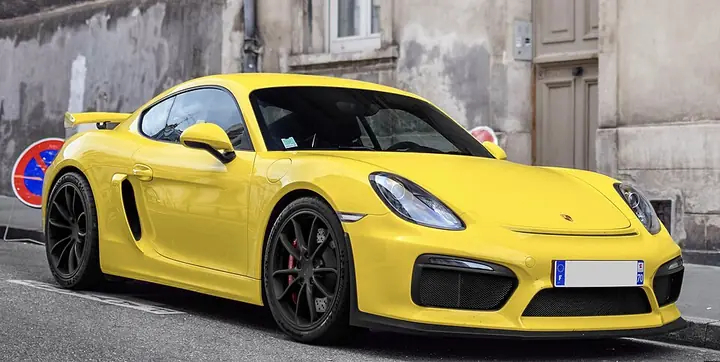
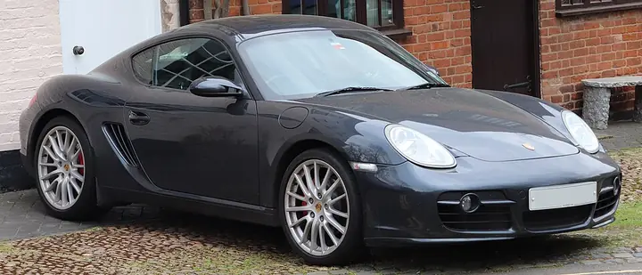
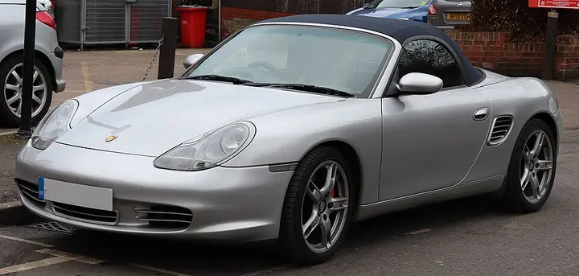

Porsche Boxster and Cayman
Fourth generation: 982 Boxster/Cayman (2016–2025) · 2016–2025
Abstract
This generation of the Porsche Boxster and Cayman is a sports car (S), built 2016–2025 in Germany: Stuttgart, Germany: Osnabrück. Body styles: 2-door roadster (718 Boxster / Spyder), 2-door fastback coupé (718 Cayman). Layout: MR layout. Designed by Peter Varga (2015), Fabian Schmölz (GT4, 2018). This generation has its own article: Porsche 718 Boxster and Cayman (982).


1Specifications
| Production | 2016–2025 |
|---|---|
| Assembly | Germany: StuttgartGermany: Osnabrück |
| Designer | Peter Varga (2015)Fabian Schmölz (GT4, 2018) |
| Class | Sports car (S) |
| Body style | 2-door roadster (718 Boxster / Spyder)2-door fastback coupé (718 Cayman) |
| Layout | MR layout |
| Platform | MMB (Modular mid-engine platform) |
| Engine | 2.0 L MA2.2 turbo flat-42.5 L MA2.22 turbo flat-44.0 L MDG flat-6 |
| Transmission | 6-speed G82.00 manual7-speed PDK dual-clutch auto |
| Wheelbase | Boxster: 2475 mmCayman: 2475 mm |
| Length | Boxster: 4379 mmCayman: 4379 mm |
| Width | Boxster: 1801 mmCayman: 1801 mm |
| Height | Boxster: 1281 mmCayman: 1295 mm |
| Weight | Boxster/Cayman:1335 kg (manual)1370 kg (PDK)Boxster S/Cayman S:1355 kg (manual)1385 kg (PDK)Boxster GTS/Cayman GTS:1375 kg (manual)1405 kg (PDK)718 Cayman GT4: 1451 kg718 Spyder: 1454 kg |
| Also called | Porsche 718 BoxsterPorsche 718 CaymanPorsche 718 Spyder |
| Predecessor | Porsche 981 |
2Versions
- 718 Boxster and Cayman
- 718 Boxster and Cayman / 718 Boxster and Cayman S
- 718 Boxster and Cayman T
- 718 Boxster and Cayman GTS
- 718 Boxster and Cayman GTS 4.0
- 718 Cayman GT4 and 718 Spyder
- 718 Cayman GT4 RS
3Previous generations

_(cropped).jpg){kind=link}




4Generation by generation
Length +1% from the first to the last
1996–2004 19964,343 mm
2005–2012 20044,359 mm
2012–2016 20124,374 mm
2016–2025 20164,379 mm
Weight +7% from the first to the last
1996–2004 19961,250 kg
2005–2012 20041,295 kg
2012–2016 20121,330 kg
2016–2025 20161,335 kg